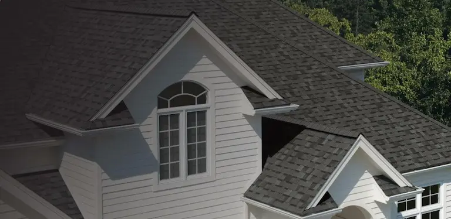
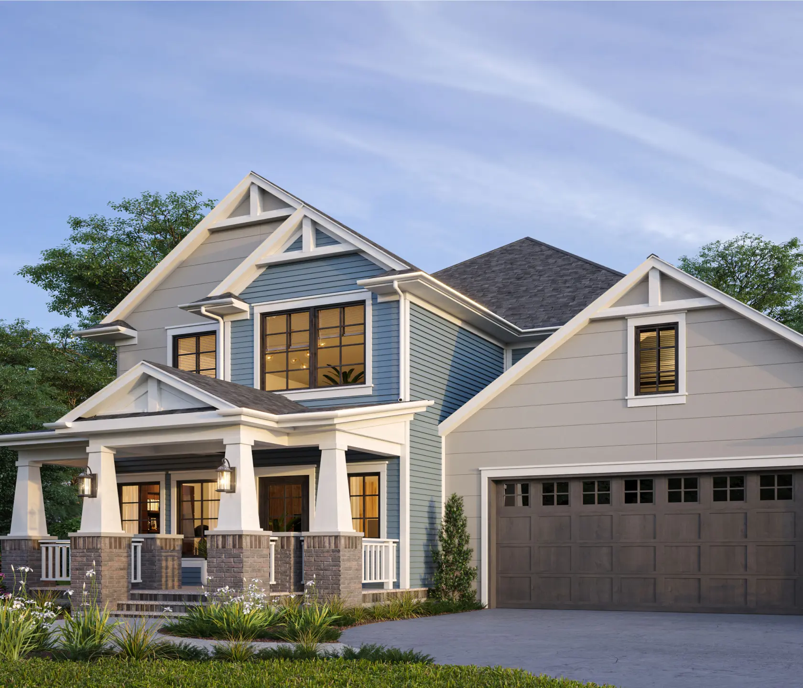
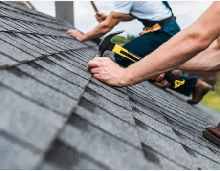
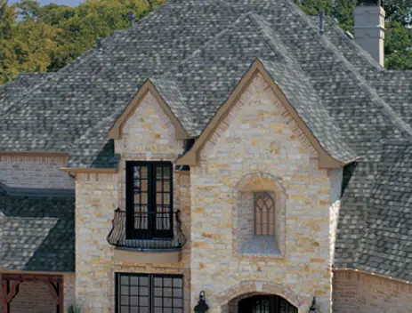
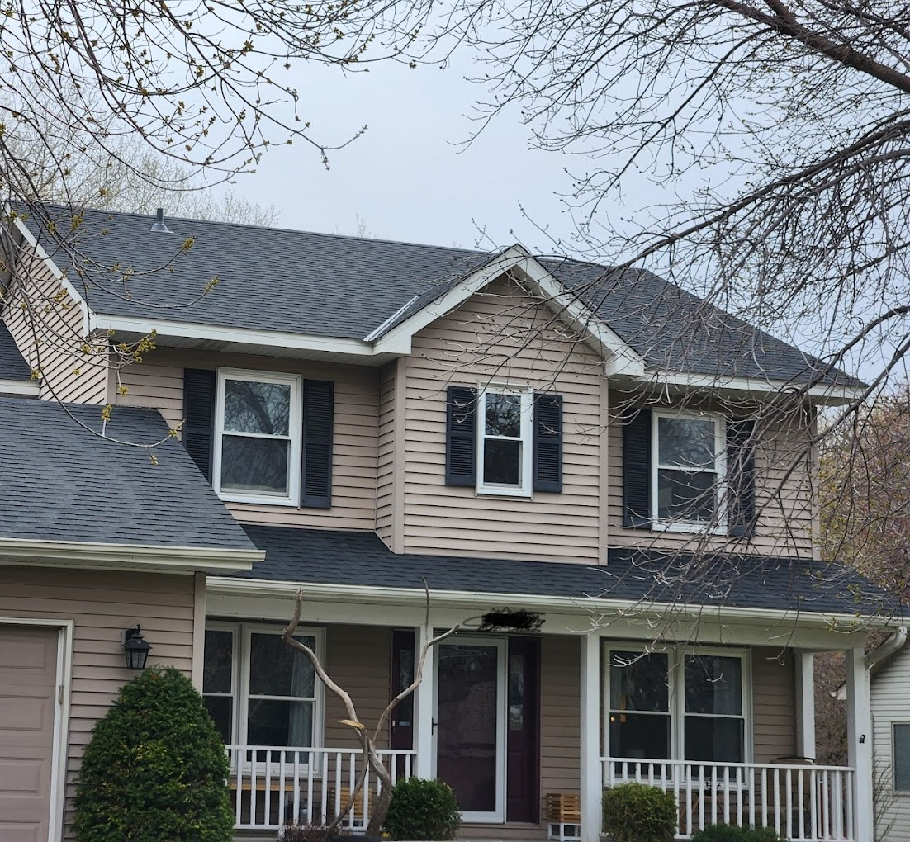
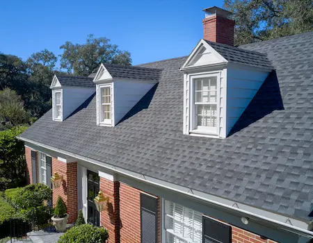

Roof Replacement
Replace aging or damaged roofing with durable materials and a contractor who has served the metro for decades.

Bloomington roofing contractor
Roof replacement, installation, and inspections. Local service for Bloomington-area homeowners.
Built for homeowner decisions
The current site already has the right ingredients: long history, clear roofing focus, phone visibility, and local service coverage. This concept brings those strengths into a cleaner mobile-first flow.
Replace aging or damaged roofing with durable materials and a contractor who has served the metro for decades.
New roof installation with a practical process, clear expectations, and workmanship-focused project delivery.
Understand roof condition, storm impact, and repair or replacement options before making a large decision.
Residential shingle roofing options selected for protection, curb appeal, and Minnesota weather exposure.


Why homeowners call
Simple next steps
Make the preferred action obvious without forcing the visitor through long copy first.
Frame inspection and storm assessment as a low-friction first step.
Use the company's quoted-price and quality-materials messaging to build confidence.



Service area
Concept page should preserve the current site's local SEO strength while making the first visit more useful. Suggested visible cities include Bloomington, Minneapolis, St. Paul, Edina, Richfield, Eden Prairie, Burnsville, Eagan, and surrounding metro communities.
Free inspection concept
Call Twin Cities Contracting Services or send a few basics. This concept form is not connected to a live inbox.
(952) 405-6201